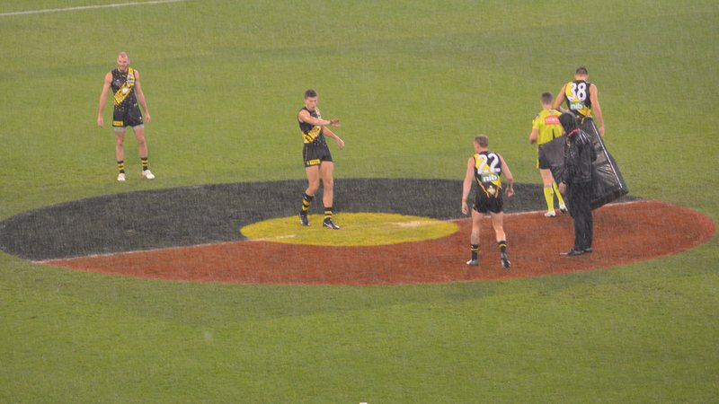

Anglais · 2de · Can a Country Remember? Aboriginal Australia Today
Un pays peut-il se souvenir ? Huit lessons de 52 minutes en onglets sur la culture aborigène dans l'Australie contemporaine (axe 3 du programme de 2025) : Budj Bim et les songlines, trois œuvres vues sur les sites des musées, les excuses de 2008 au niveau B1, langues, sport et musique d'aujourd'hui, les Jeux de 2018. CO, CE, PO et PE dans chaque lesson, grammaire, lexique et prononciation évalués, audioguide final, version élève, version prof, version dys.
Voir le supportPhoto : DustyNail, cercle central du match Dreamtime at the 'G, 2019, CC BY-SA 4.0, Wikimedia Commons.